Producer, Programmer, Game Designer, Sound Designer
Store Page
Bell’s Beach is a silly exploration platformer where fishing is taken to its illogical extreme.
Run and jump around a vibrant coastal town, chatting with eccentric locals,
and search for fishing spots that only a keen eye and a slightly mad mind will be able to discover.
Key Responsibilities and Accomplishments:
Designing and implementing a third-person character controller with a unique fishing mechanic
Identifying inefficiencies in the team’s workflow and implementing tools/pipeline scripts to improve them,
including custom asset importers, collider visualisation and a narrative scripting engine
Planning and managing the work for an agile team of six members, facilitating communication and fostering a positive team environment that avoids crunch
Proactively and constantly reassessing scope
Maintaining task/issue/risk tracking and project documentation in Notion
Presenting and pitching the project to both professional peers and the general public
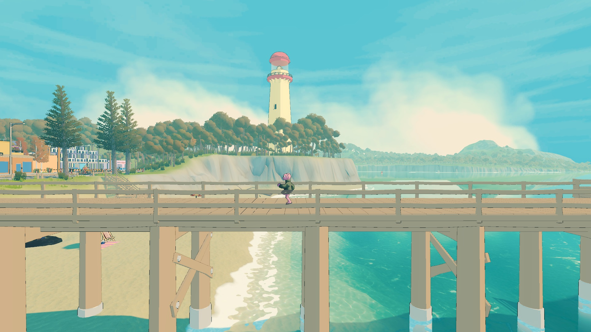
Bell’s Beach was developed by a team of six members as the final capstone project for RMIT’s Bachelor of Design (Games) course.
We also worked with two external composers to produce the game’s soundtrack.
This game represents the best of what we have learned and developed during our time in the course,
especially in our production methodologies. I'm proud to say that the project is exactly what we set out to create.
My role was primarily that of the producer and lead programmer, but included other responsibilities such as game design, sound design, writing and cinematography.
We have showcased this game at ACMI’s RMIT Audience Lab event in December 2022,
and presented a well received informal pitch to a panel of mentors as well as VicScreen’s Paul Callaghan in our final assessment.
Go Home, Grub is a short platformer experience where a cute,
tiny grub climbs over backyard objects on the way back to its home.
Key Responsibilities and Accomplishments:
Planning and managing work for an agile team of eight members: facilitating standups, sprint planning and retrospectives.
Identifying and solving conflict and communication gaps between team members
Producing and maintaining important project documentation as well as task/issue/risk tracking
Delegating production responsibilities to team leads and ensuring the chain of communication functions
Helping the team to make hard decisions about the shape and scope of the project, ensuring it ships on time with team members happy
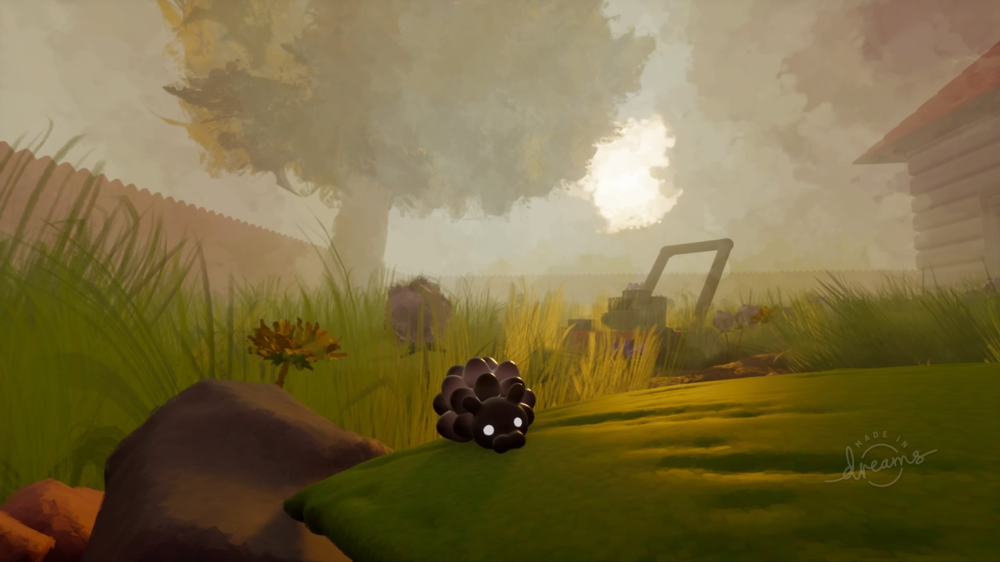
Go Home, Grub was developed by a team of eight members in a Work-Integrated-Learning course hosted by RMIT and Media Molecule,
using the game creation tool Dreams. The game’s core goal was creating a sense of smallness, presenting common human-made objects to scale from the viewpoint of an insect, and was a massive success.
With a large team of unfamiliar collaborators, a set of tools we had no previous experience with, and a simulated studio environment, this course served as an incredible exercise in building production skills.
This was my first time working as a dedicated producer, only briefly touching Dreams directly to assist with sound design, and it was a fantastic experience.
This project had many points of friction and difficulty, including a novel mechanic that was ultimately cut, tension between team members, and shifting design pillars,
all of which I worked to mitigate, receiving commendation from my fellow team members as well as my mentors.
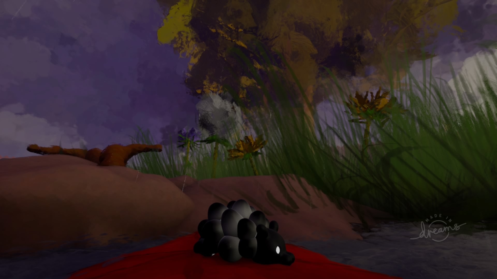
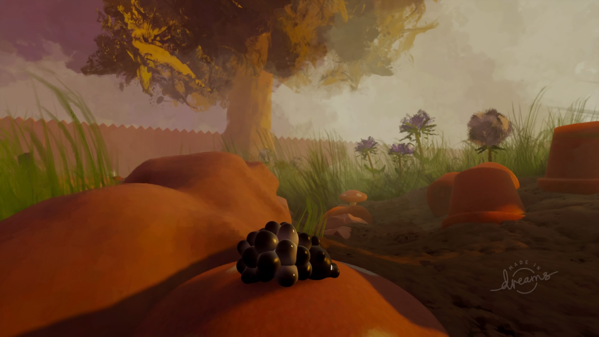
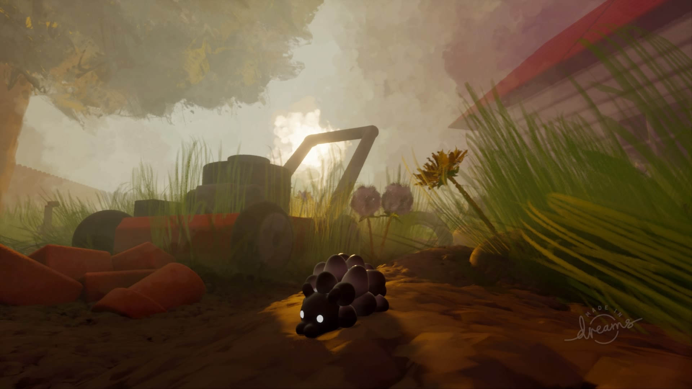
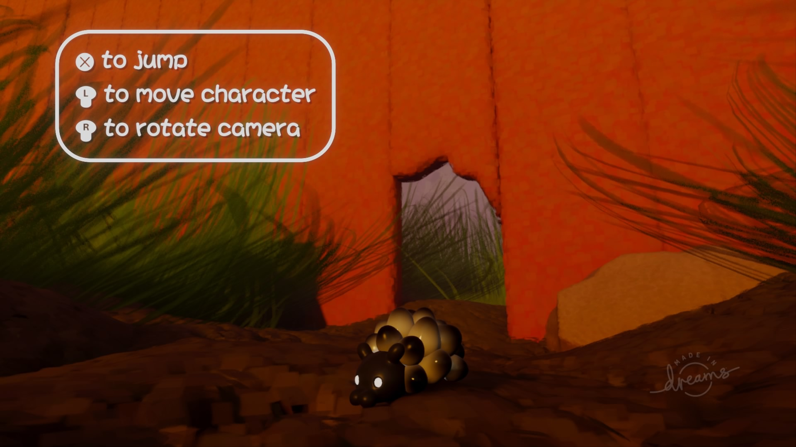
×
Billy Teaches Friendship!
Solo (Programmer, Producer, Writer, Designer)
Store Page
Billy Teaches Friendship! is a short, silly visual novel where the player
helps a man and his anxious brother to overcome social anxiety and make some friends.
It features some silly "meta" shenanigans using file manipulation.
Key Responsibilities and Accomplishments:
Incredibly flexible narrative game engine using a mixture of narrative scripting (Yarn Spinner) and visual scripting (Flow Canvas) to
create and iterate on content quickly, smoothly, and playfully with an eye for throwaway gags.
The game seals itself into a password-protected zip file and refuses to let you keep playing until you say "i'm sorry" to the zip.
Isn't that so good??
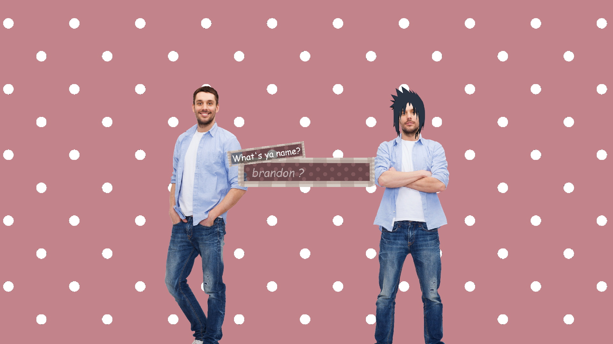
I developed Billy Teaches Friendship! on my own over a couple of weeks.
The narrative engine in this game really is a crown jewel for me. I've been making and remaking dialogue and narrative sequencing tools
as long as I've been making games, at least once a year, and it gets better every time. I'm always looking to
make tools that allow me, and my collaborators, to chase their fancy, add something silly and throwaway, and do so with
minimal friction and effort. The addition of a high-quality visual scripting toolset like Flow Canvas has been absolutely amazing,
and especially in the context of Unity and its steadily ballooning compile times, is a huge boon to iteration time.
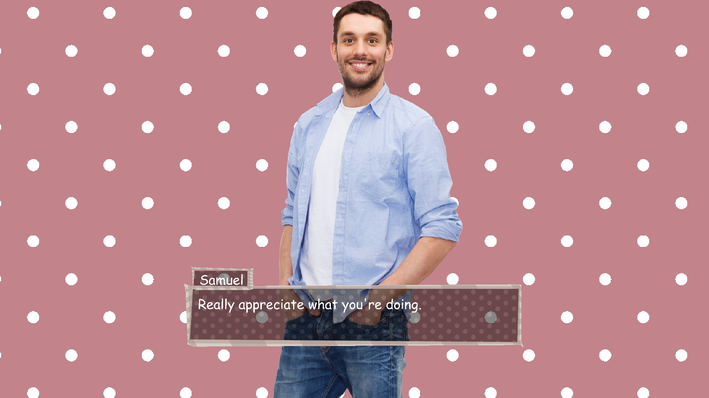
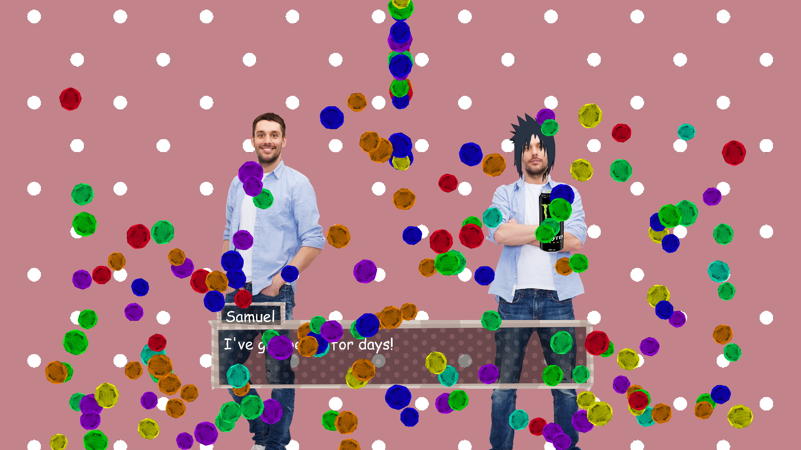
×
Cosmic Commute
Producer, Programmer, Writer, Game Designer
Store Page
Cosmic Commute is a surreal space comedy set in a world stranger than fiction: the public transport system.
Playing as everyone's least favourite discount cop - a ticket inspector - discover that even unfathomable creatures have relatable problems.
Key Responsibilities and Accomplishments:
Planning and managing the work for an agile team of six members, facilitating communication and fostering a positive team environment that avoids crunch
Designing a game to meet the strengths and weaknesses of an inexperienced team and accommodate a flexible scope
Designing and implementing a dialogue system that responds to character and player positions while maximising readability/accessibility at all angles
Writing a full cast of vibrant, funny characters and working closely with the character artist to marry writing voice and visual design
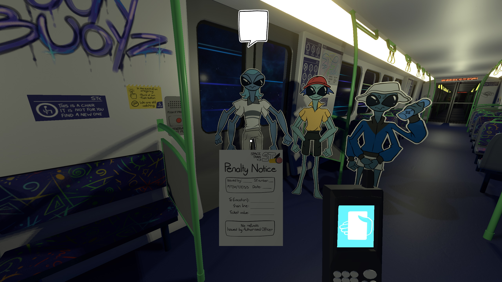
Cosmic Commute was developed by a team of four members.
We sought to create a comedic adventure inspired by our shared experiences living in Melbourne, presenting a fantastical version of mundane experiences.
This project was my first time formally occupying the role of producer, where I hosted meetings, produced and maintained documentation,
and put great effort into understanding the workflows of my fellow team members to ensure the production ran smoothly.
The game was designed from conception to have an intensely flexible scope – a method to ensure, despite our relative inexperience working on games in a team,
that we could produce a polished and complete experience.
We were approached to include Cosmic Commute in the next issue of a prominent, physically distributed,
curated collection of independent games, the details of which are still private as of December 2022.
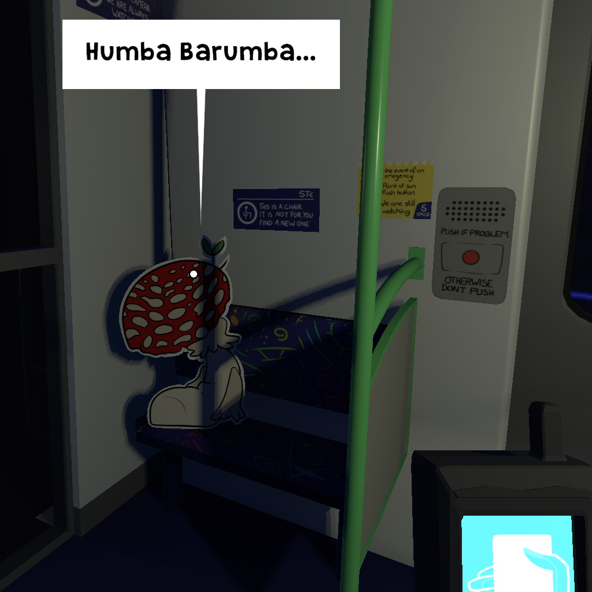
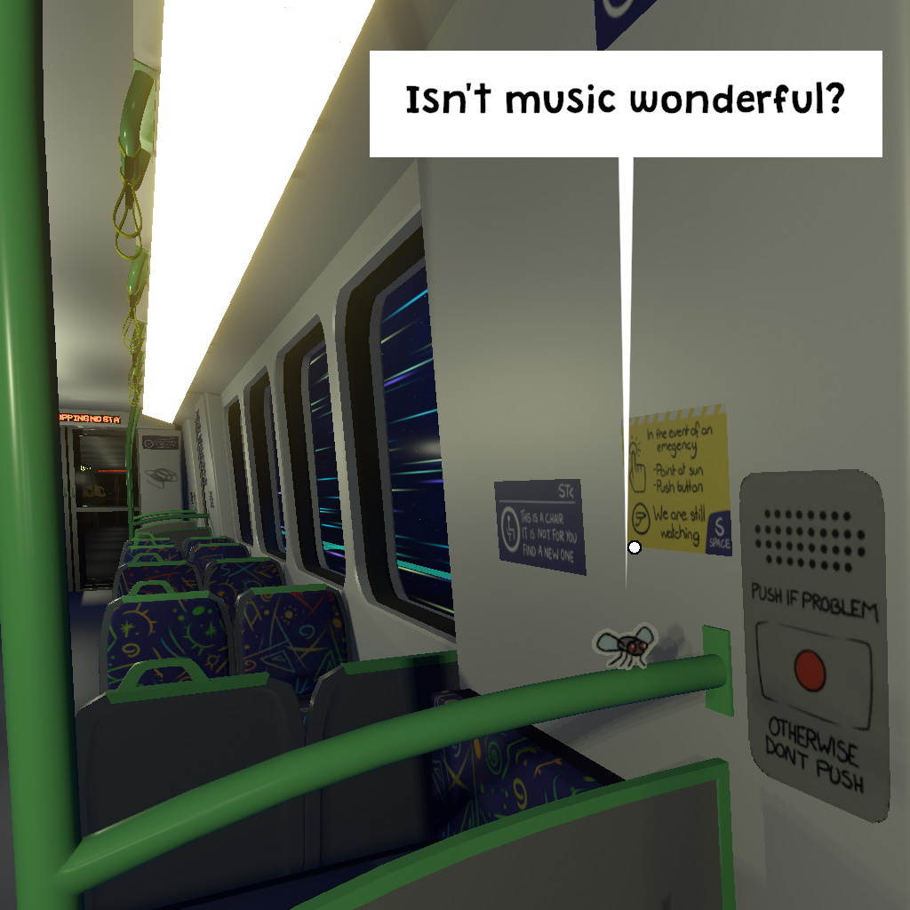
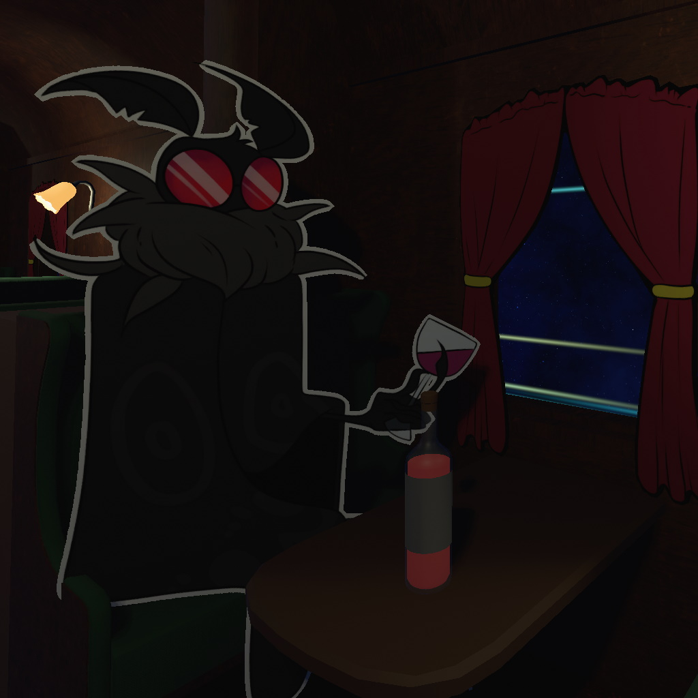
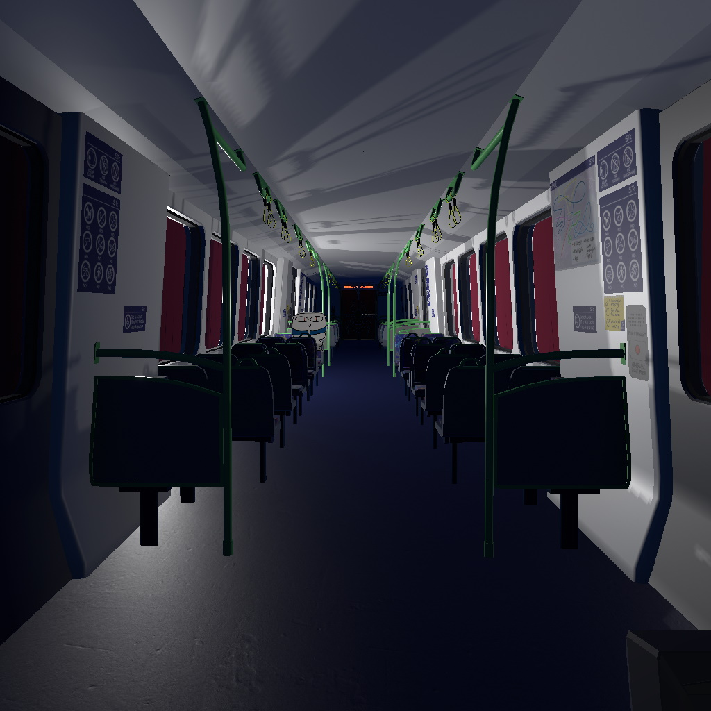
×
Monomyth
Game Designer, Level Designer, Writer, Programmer, Sound Designer, 3D Art
Store Page
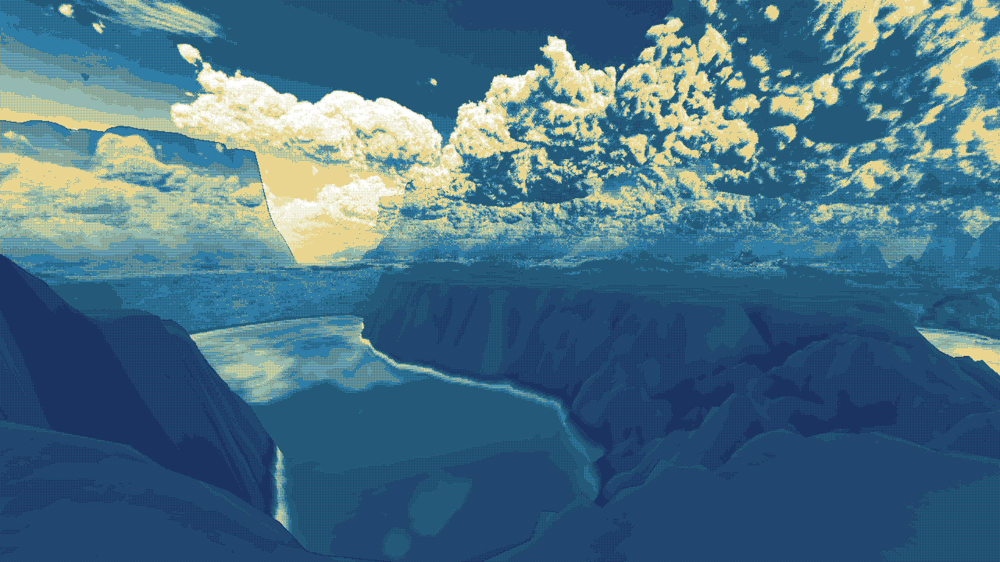
Experience a tale as old as time: the Hero’s Journey, told as literally as possible!
Monomyth is a relaxed and surreal walker that pokes light fun at Joseph Campbell’s universal story and the grand language used to describe it.
Key Responsibilities and Accomplishments:
Created an interesting and thoughtful narrative experience through primarily level design
Leveraged shaders and post-processing along with external art assets to create a cohesive art direction with little modelling or texturing work
Produced, filmed and edited a well received 10-minute video presentation on the creation of the game and my creative process
for the world’s longest running independent games festival
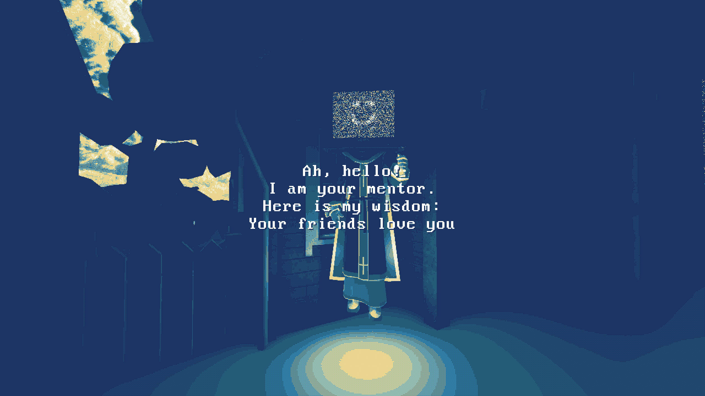
Monomyth is a game that I developed on my own, with an external composer who produced the title screen’s music.
I created this game as an exploration of visual and narrative ideas expressed through primarily level design,
which takes centre stage alongside very light gameplay and explicit story.
The idea of interpreting Joseph Campbell’s Monomyth literally was intended to poke fun at the strange and hyper specific language he used to describe it,
but interestingly, it also reinforced and validated the broad structure, pacing and ideas behind the concept.
I relied very heavily on art assets sourced from the Unity asset store among other places,
and used the combination of abstract imagery and shader/post-processing work to unify potentially disparate styles into one cohesive experience.
I was invited by Freeplay to talk about this game, my influences, and my process at the 2021 Freeplay Parallels event.
Use your alchemy-boat to blast your way through frog town and win the potion prize!
Key Responsibilities and Accomplishments:
Designed and implemented a modular weapon system that could produce a variety of different effects with no additional programming, and was usable by both the player and enemies
Designed and implemented the alchemy menu, where players frantically reload their weapon with a physics based minigame
Implemented artificial intelligence for the game’s different enemies
Iterated on the character controller to find a satisfying balance between the sensation of speed and the precision required for combat
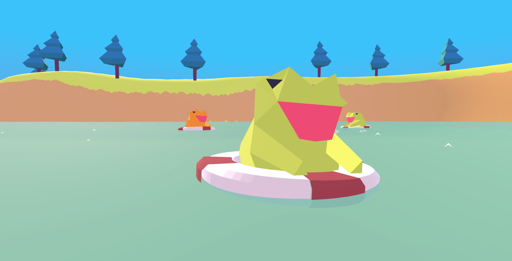
Speedboat Alchemy was created by a rotating team of five members for the Ludum Dare 49 game jam.
With the theme “unstable”, we drafted the concept for the game as one that deliberately evoked a lot of stress and friction in its gameplay.
The player’s weapon has completely randomized properties that change every time they reload,
and reloading requires opening an entire menu on top of the action, manually and slowly dragging the “ingredients” into a cauldron.
By making these systems both heavy and unpredictable, we aimed to create an experience where the players threw their hands up and gave into the chaos,
frantically throwing whatever they could together.
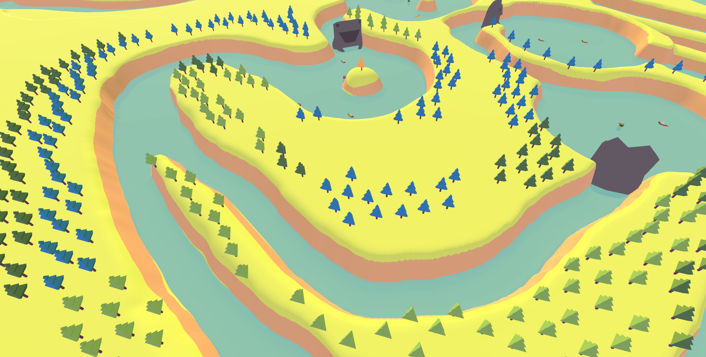
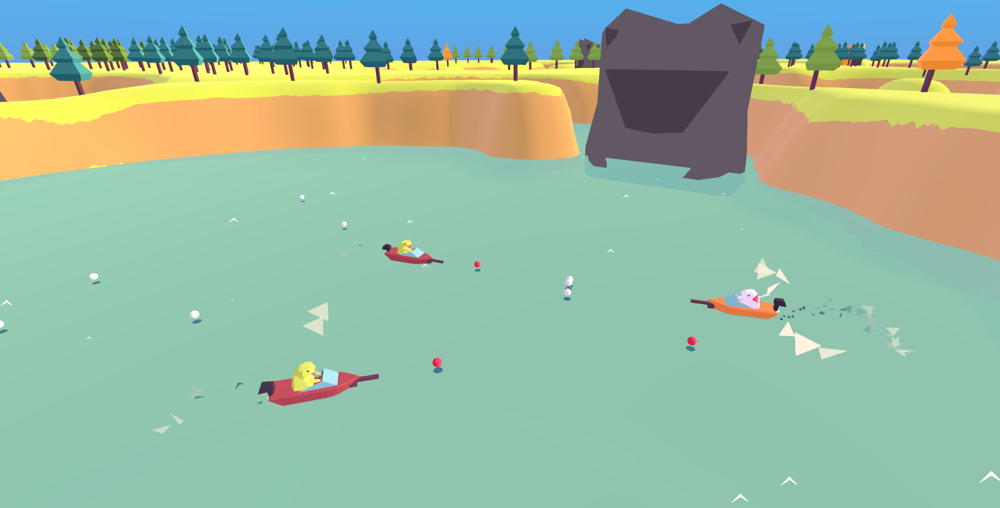
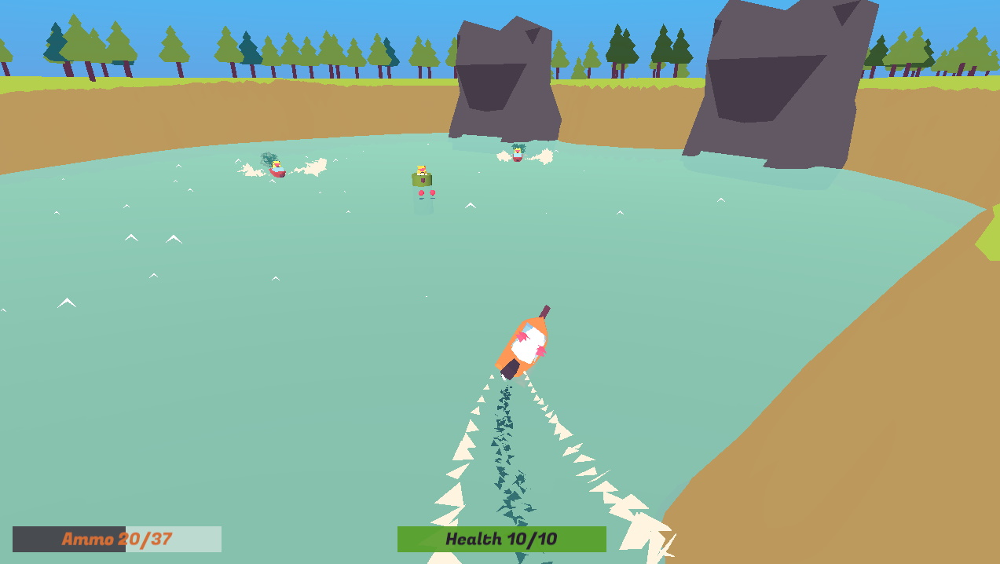
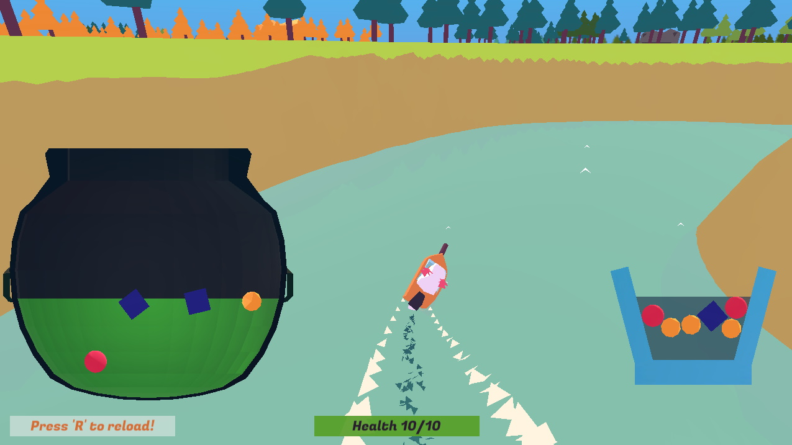
×
Ephemeral
Game Designer, Programmer, Level Designer, Writer, Sound Designer, 2D Art
Store Page
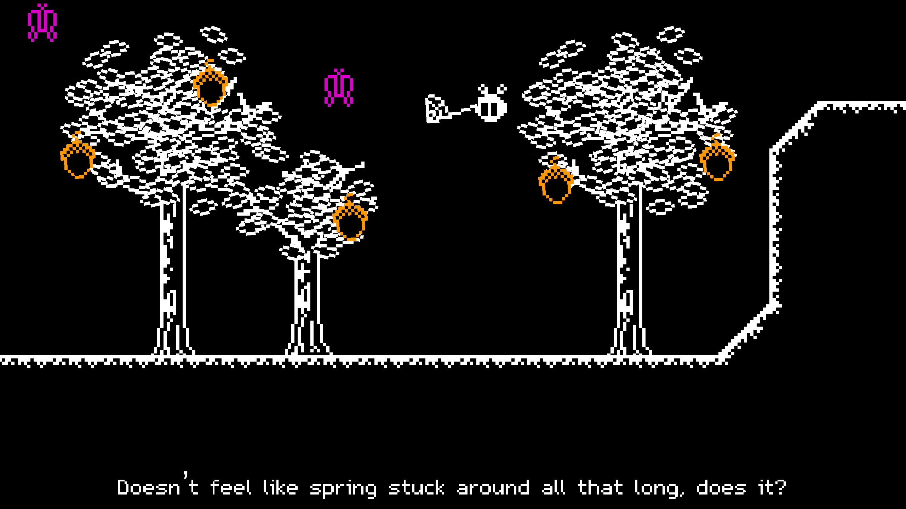
A meditative platformer about catching bugs and picking flowers while a gentle voice ushers you to the afterlife.
Key Responsibilities and Accomplishments:
Designed and implemented a novel “bug net” mechanic which evokes the feeling of acrobatic,
position-sensitive action platformer combat (e.g. Hollow Knight) while maintaining cohesion with the narrative
Brought a complete and polished game experience from concept to completion in 48 hours, including time for playtesting
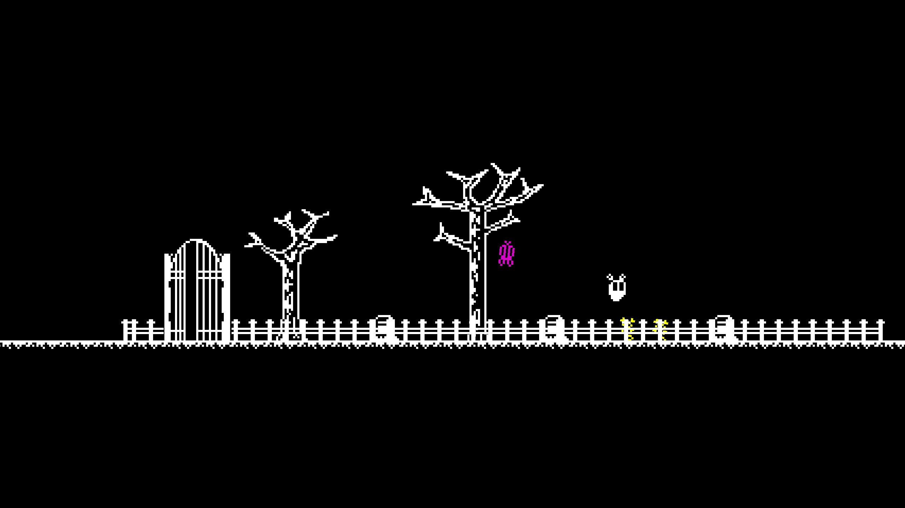
I created Ephemeral entirely on my own for the 1bit Jam, which had the theme of “death”.
I designed Ephemeral as a non-violent game that still evokes the acrobatic feeling of Hollow Knight’s combat,
which became the game’s central mechanic, the net, which allows you to jump additional times in the air by catching butterflies or acorns.
I think this was an incredible success, creating a platformer with momentary gameplay that almost feels like positioning for an attack,
but maintains the cute, quiet and peaceful tone. Narratively, this game was an exploration of my relationship with the idea of god.
What would it be like, speaking to a higher power? With this in mind, I wrote a character who truly felt benevolent, and intimate,
yet beyond life and understanding, and their gentle words follow you from level to level.